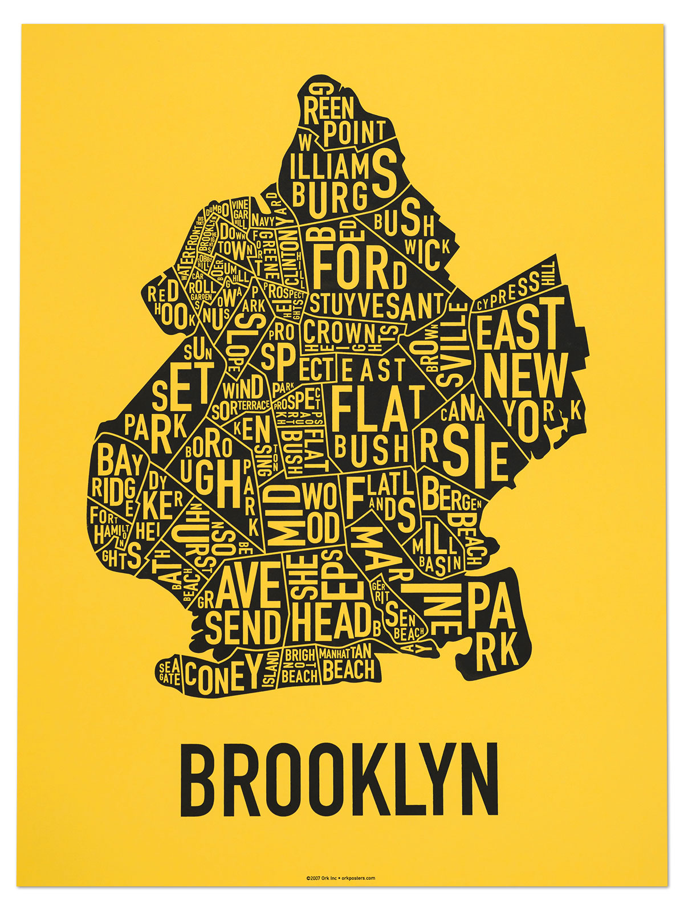
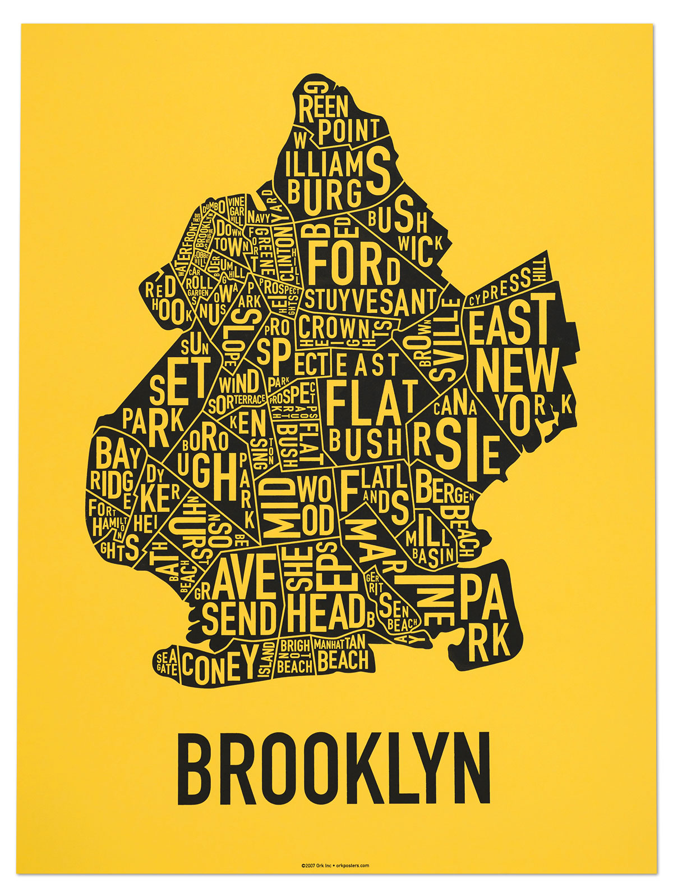

I was on born on February 10, 1988 in Coney Island hospital. My early years were spent here.
New Rochelle, NY is a small city in the suburbs of New York City.
It is located about twenty-five to thirty minutes outside of Manhattan.
The majority of my youth was spent here, as I went through all of my schooling from K-12 here.
For about nine years, I spent every summer living in Lee, Massachusetts.
I worked as a basketball coach at Camp Lenox; a summer camp, located in the Berkshire mountains.

In 2006, I moved to Pittsburgh. I lived there for five years while studying Political Science & philosophy at the University of Pittsburgh.
This is where I learned to love the snow and hate the Steelers.
Currently, I reside in Tampa, FL. I moved to Tampa in the summer of 2016, after
being hired to work at Progressive Insurance.
After living here for a year and a half, I can truly say that I love it here.